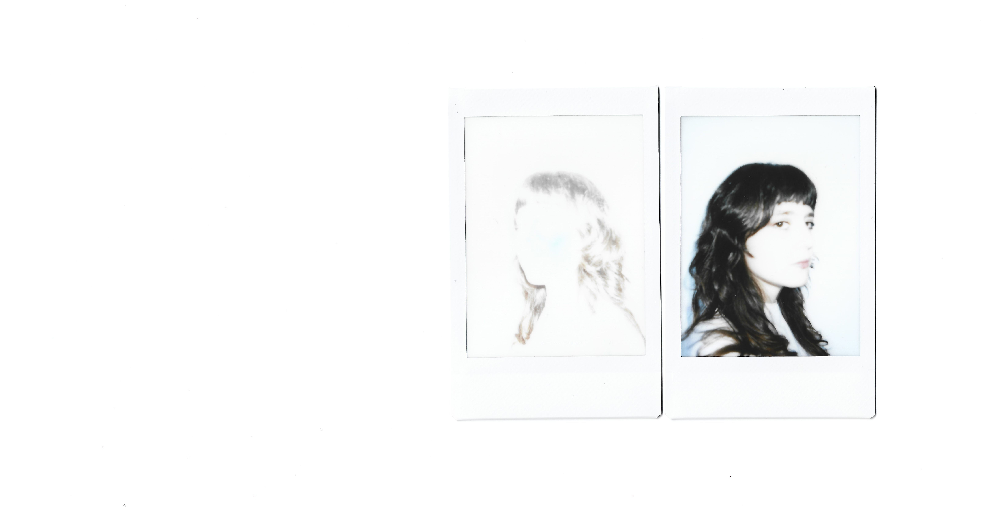

Ana Vitória Versos (Bragança, 2002) é uma artista multidisciplinar nascida e criada nas costas do monte. Vinda do Nordeste Transmontano, a jovem artista procura sentido na apropriação das paisagens rochosas e esverdeadas que dão abrigo a um labor natural, cíclico, silencioso e sem dono.
O seu corpo de trabalho é um corpo em busca de uma cabeça: armado com as linguagens da escultura, escrita, performance e fotografia, imagina-se um universo ficcionado, violento, cru e cor de rosa de descoberta do mundo envolvente através do autoconhecimento, aí são explorados os temas de género, identidade, pertença, natureza e a inevitável relação que existe entre esses elementos.
Ana Vitória Versos (Bragança, 2002) is a multidisciplinary artist born and raised on the slopes of the mountain. Coming from the region of Trás-os-Montes, the young artist seeks meaning in appropriating the rocky and green landscapes that shelter a natural, cyclical, silent, and ownerless labor.
Her body of work is a body in search of a head: armed with the languages of sculpture, writing, performance, and photography, she imagines a fictional, violent, raw, and rosy universe of discovery of the world around her through self-knowledge, exploring themes of gender, identity, belonging, nature, and the inevitable relationship that exists between these elements.
